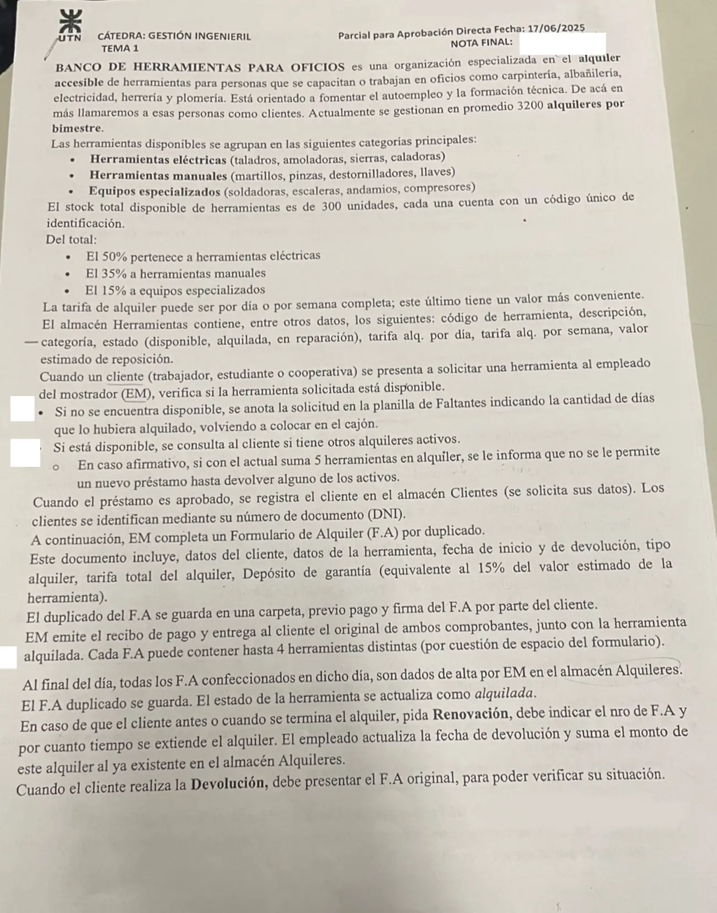
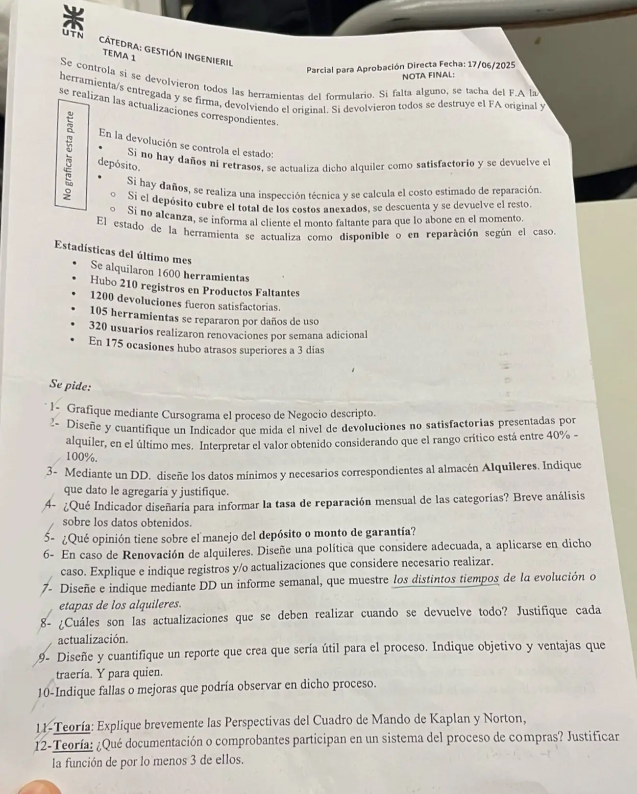

Parcial de aprobación directa, 17/06/2025
Parcial de aprobación directa, 17/06/2025
Enunciado




Preguntas con opciones
Salen de este examen, adaptadas. Dejalas para el final, porque las opciones pueden dar pistas.
- 1
En el Cuadro de Mando Integral, ¿qué perspectiva sirve de enfoque para los objetivos e indicadores de todas las demás?
Se tomó: Parciales AD 17/06/2025 y 22/06/2022, adaptada
El libro lo dice con esas palabras: los objetivos financieros sirven de enfoque para los de las demás perspectivas.
- 2
¿Qué proporciona la perspectiva de aprendizaje y crecimiento?
Se tomó: Parciales AD 17/06/2025 y 22/06/2022, adaptada
Sus objetivos son los inductores necesarios para conseguir resultados excelentes en las otras tres.
Propuesta de respuesta
Respuesta no verificada. La propuso Luta Studios con inteligencia artificial y ningún docente la revisó. Puede tener errores.
1. Cursograma
Una columna por sector, con los símbolos del resumen de un alumno que usa la materia. Los almacenes lógicos van al costado con flecha punteada. Si la flecha apunta al almacén lo actualiza, y si apunta a la operación lo consulta. El número chico de cada documento es el ejemplar, 0 el original y 1 el duplicado. El control del estado en la devolución no está, porque la hoja lo marca con «No graficar esta parte». Tocá el dibujo para verlo en pantalla completa.
2. Indicador de devoluciones no satisfactorias
La narrativa no da el total de devoluciones del mes. Se toman como devueltas las 1600 herramientas alquiladas.
| Estado | Umbral | Rango crítico | Periodicidad |
|---|---|---|---|
| 25 % | Menos de 40 % | 40 % a 100 % | Mensual |
Una de cada cuatro devoluciones tuvo daños o retraso. Está por debajo del rango crítico, así que el proceso está bajo control. Igual conviene seguirlo de cerca, porque los 175 atrasos de más de 3 días y las 105 reparaciones explican buena parte de esas 400.
3. DD del almacén Alquileres
Alquileres = nro_FA + DNI_cliente + fecha_inicio + fecha_devolucion
+ tipo_alquiler(d) + herramientas(e) + tarifa_total
+ deposito_garantia + estado(d)
tipo_alquiler(d) = <día | semana>
herramientas(e) = cod_herramienta + (cod_herramienta)
+ (cod_herramienta) + (cod_herramienta)
estado(d) = <activo | satisfactorio | no satisfactorio>El cliente va por su DNI y cada herramienta por su código, porque el resto de sus datos ya está en Clientes y en Herramientas. Entran hasta cuatro herramientas, lo mismo que en un F.A. La tarifa total es la que se acumula con las renovaciones.
Dato que agregaría. (fecha_devolucion_real). El almacén guarda la fecha pactada, que además se pisa en cada renovación. Sin la fecha real no se pueden medir los atrasos (hubo 175 de más de 3 días) ni armar el informe de tiempos de la consigna 7. Va entre paréntesis porque está vacía mientras el alquiler sigue activo.
4. Tasa de reparación mensual por categoría
Se calcula una vez por categoría, con eléctricas, manuales y equipos especializados. La narrativa da las 105 reparaciones todas juntas, así que con estos datos solo sale la tasa total.
Análisis. Casi 7 de cada 100 herramientas alquiladas vuelven con daños de uso. Contra el stock es mucho más, porque 105 de 300 herramientas son el 35 % del banco pasando por reparación en un mes. Al abrirlo por categoría se ve dónde está el problema. Si los equipos especializados, que son solo 45 unidades, concentran las reparaciones, conviene revisar su depósito de garantía y el control al entregarlos.
5. El depósito de garantía
- Es el 15 % del valor de reposición para todas las categorías. Cubre un daño chico, pero si la herramienta se pierde o se rompe del todo queda corto, y más en los equipos especializados. Se puede fijar un porcentaje por categoría.
- No cubre los atrasos. Hubo 175 de más de 3 días y el proceso no cobra nada por ellos. El depósito podría cubrir los días de atraso a la tarifa diaria.
- No está claro qué pasa cuando falta una herramienta. El F.A se tacha y el cliente se lo lleva, pero el proceso no dice si el depósito queda retenido. Debería quedar hasta la devolución completa.
- Su devolución no deja registro. Haría falta un comprobante y guardar el depósito cobrado y el devuelto en Alquileres.
- Lo cobra, lo registra y lo devuelve la misma persona. Las normas de movimiento de fondos del resumen piden que quien maneja fondos no los registre.
6. Política de renovación
- Se pide antes de la fecha de devolución y con el F.A original. Pasada la fecha ya es un atraso.
- Antes de renovar, EM mira la planilla de faltantes. Si otro cliente espera esa herramienta, no se renueva.
- Se cobra en el momento con la tarifa que corresponda, por día o por semana, y se emite un recibo.
- Hay un máximo de renovaciones por F.A, por ejemplo dos. Después se devuelve y se alquila de nuevo.
| Registro | Qué cambia |
|---|---|
| Alquileres | Nueva fecha_devolucion, el monto se suma a tarifa_total y una cantidad_renovaciones nueva |
| F.A original del cliente | Se anota la nueva fecha y el monto, con la firma de EM, para que tenga constancia |
| Recibo | Por el pago de la renovación |
Es una operación frecuente. En el último mes renovaron 320 usuarios, contra 1600 herramientas alquiladas.
7. Informe semanal de tiempos
Informe_tiempos = titulo + semana(e) + detalle(e) + promedios(e)
semana(e) = fecha_desde + fecha_hasta
detalle(e) = nro_FA + cod_herramienta + categoria(d) + fecha_inicio
+ fecha_devolucion_pactada + (fecha_devolucion_real)
+ dias_alquilado + (dias_renovados) + (dias_atraso)
+ (dias_en_reparacion) + estado(d)
promedios(e) = promedio_dias_alquilado + promedio_dias_renovados
+ promedio_dias_atraso + promedio_dias_en_reparacion
categoria(d) = <eléctricas | manuales | equipos especializados>
estado(d) = <activo | renovado | devuelto | en reparación>detalle(e) se repite por cada herramienta de cada F.A con movimiento en la semana, ordenado por fecha de inicio. Lo que puede faltar va entre paréntesis. Por ejemplo, un alquiler sin renovar no tiene días renovados. El informe necesita la fecha real de devolución de la consigna 3 y la fecha en que la herramienta vuelve de reparación, que hoy no se guardan.
8. Actualizaciones cuando se devuelve todo
| Actualización | Por qué |
|---|---|
| Alquileres, el alquiler queda como satisfactorio o no | Deja de contar como activo para el tope de 5 herramientas, y es el dato del indicador de la consigna 2 |
| Herramientas, el estado pasa a disponible o en reparación | Si quedara como alquilada, el control de disponibilidad la negaría y se anotaría en faltantes sin motivo |
| Alquileres, la fecha real de devolución | Mide los atrasos. Es el dato que se agrega en la consigna 3 |
| Destrucción del F.A original | Que no se pueda volver a presentar para reclamar herramientas o el depósito |
| Devolución del depósito, con comprobante | Cierra la cuenta con el cliente y deja constancia |
9. Reporte
Reporte mensual de resultados de los alquileres. Es para la gerencia del banco.
| Concepto | Cantidad | % sobre las alquiladas |
|---|---|---|
| Herramientas alquiladas | 1600 | 100 % |
| Devoluciones satisfactorias | 1200 | 75 % |
| Devoluciones no satisfactorias | 400 | 25 % |
| Reparadas por daños de uso | 105 | 6.6 % |
| Atrasos de más de 3 días | 175 | 10.9 % |
| Usuarios que renovaron una semana más | 320 | 20 % |
| Solicitudes anotadas en faltantes | 210 | 13.1 % |
Período, el último mes. Ordenado como sigue el alquiler, de la salida a la devolución.
Objetivo. Ver en una hoja cómo terminan los alquileres y cuánta demanda queda sin atender.
Ventajas. Muestra si conviene comprar más unidades, porque 210 pedidos quedaron sin herramienta, el 11.6 % de una demanda de 1810. También si hay que revisar el depósito por los daños y si hace falta cobrar los atrasos. Abierto por categoría, dice además en cuál invertir.
10. Fallas y mejoras
- El alta en Alquileres es al final del día. Mientras tanto, una herramienta que ya salió sigue figurando disponible, y el tope de 5 no se puede controlar contra el almacén. Conviene dar el alta y pasarla a alquilada en el momento.
- Los alquileres activos se le preguntan al cliente. Ese control depende de lo que el cliente diga. Hay que consultarlo en Alquileres.
- El cliente se registra en cada préstamo. El proceso no dice que primero se lo busque en Clientes. Si ya está, alcanza con consultarlo.
- La planilla de faltantes es de papel y va al cajón. Es un dato que se guarda y nadie usa. Como almacén lógico sirve para decidir compras y para avisarle al cliente cuando la herramienta vuelve.
- Una sola persona hace todo. EM controla, cobra, emite el recibo, registra y recibe la devolución. Falta separar funciones.
- El F.A admite 4 herramientas y el tope es 5. Un cliente con 5 necesita dos formularios. Se puede ajustar el formulario o el tope.
- No se guarda la fecha real de devolución ni el depósito devuelto, como se ve en las consignas 3 y 5.
- La renovación no se cobra ni queda anotada en el F.A del cliente, como se ve en la consigna 6.
11. Teoría. Perspectivas del Cuadro de Mando
Financiera. Los objetivos financieros sirven de enfoque para los objetivos e indicadores de todas las demás perspectivas. Cada medida forma parte de relaciones de causa y efecto que culminan en la mejora de la actuación financiera.
Del cliente. Las empresas identifican los segmentos de cliente y de mercado en que han elegido competir. Permite equiparar los indicadores clave sobre clientes (satisfacción, fidelidad, retención, adquisición y rentabilidad) con esos segmentos.
Del proceso interno. Los directivos identifican los procesos más críticos para conseguir los objetivos de accionistas y clientes. Sus objetivos e indicadores suelen desarrollarse después de formular los de las perspectivas financiera y del cliente. Abarca la cadena de innovación, operaciones y servicio posventa.
De aprendizaje y crecimiento. Proporciona la infraestructura que permite alcanzar los objetivos de las otras tres perspectivas. Sus variables son las capacidades de los empleados, las capacidades de los sistemas de información, y la motivación, delegación de poder y coherencia de objetivos.
Es el texto del resumen, que sale de El Cuadro de Mando Integral, de Kaplan y Norton, páginas 59, 76, 105, 110, 139 y 140.
12. Teoría. Documentos del proceso de compras
| Documento | Función |
|---|---|
| Nota de requisición (REQ) | Pide la adquisición o provisión de un bien o servicio. Es el pedido formal de un responsable, con el que arranca el trámite |
| Pedido de cotización (PC) | Les pide una cotización a los posibles proveedores. Arriba de cierto monto se piden por lo menos 3, para evitar la discrecionalidad |
| Orden de compra o nota de pedido (OC) | Le pide al proveedor los bienes o servicios detallados. La firma el funcionario que autoriza |
| Informe o nota de recepción (NR) | Deja constancia de que los bienes o servicios se recibieron, controlados en cantidad y calidad |
Del proveedor llegan la cotización, el remito y la factura, que el proceso recibe pero no emite. Sale del resumen de un alumno, la única fuente del Drive sobre procedimientos.
Respuesta no verificada. Puede tener errores.
Se armó con la página del parcial, secciones Cursograma, Diccionario de datos, Reportes, Indicadores de gestión, Fallas y mejoras, Procedimiento de compras y Cuadro de Mando Integral.
Quedó en duda: La hoja tiene escrito a mano «No graficar esta parte» y no se sabe si lo anotó la cátedra o un alumno. El cursograma deja afuera el control del estado en la devolución. La narrativa no dice cuántos ejemplares tiene el recibo ni dónde queda la copia, si la hay. En la consigna 2 se toma que se devolvieron las 1600 herramientas alquiladas del mes. Las 105 reparaciones no vienen por categoría, así que la consigna 4 queda calculada en total. La notación del DD es la del trabajo de un alumno, que no trae símbolo para lo que se repite, y eso se aclara con palabras. Los cursogramas, el DD y los documentos de compras salen de material de alumnos, porque el Drive no tiene el apunte de la cátedra.
¿Cómo te fue?
Marcá cada tema del examen. Las preguntas con opciones ya se corrigieron solas.
- CursogramaCursograma, en Parcial de aprobación directa
- DDCómo viene el examen, en Parcial de aprobación directa
- IndicadoresIndicadores de gestión, en Parcial de aprobación directa
- ReportesReportes, en Parcial de aprobación directa
- MejorasFallas y mejoras, en Parcial de aprobación directa
- Cuadro de MandoCuadro de Mando Integral, en Parcial de aprobación directa
- ComprasProcedimiento de compras, en Parcial de aprobación directa